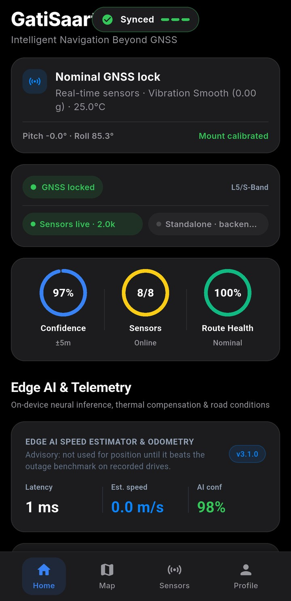
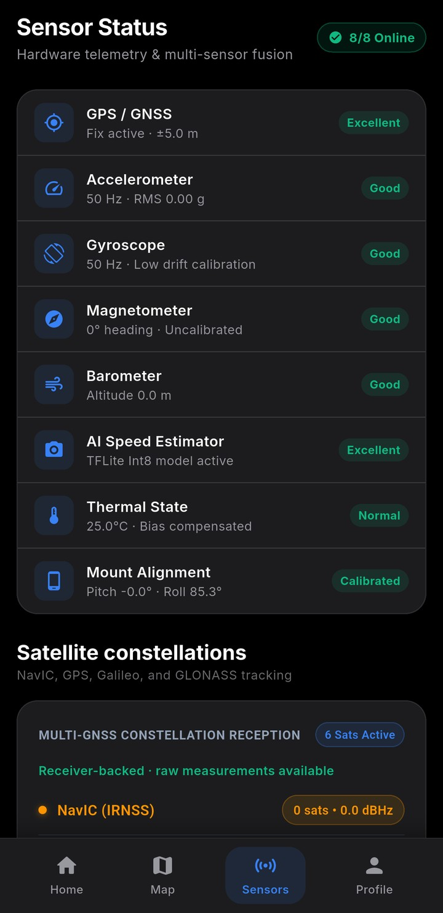
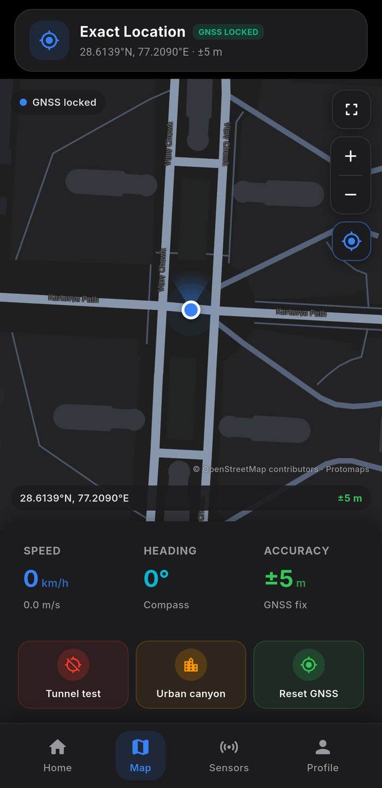
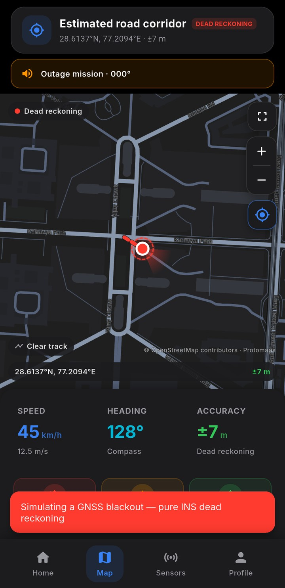
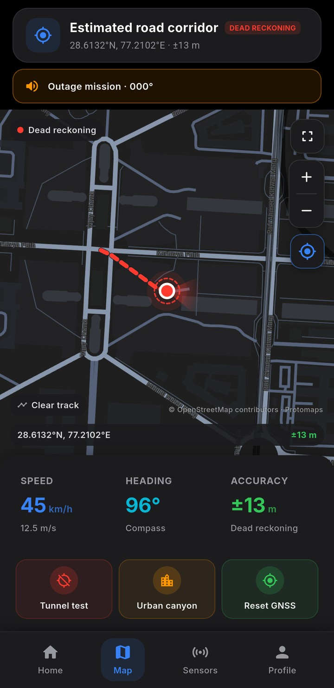
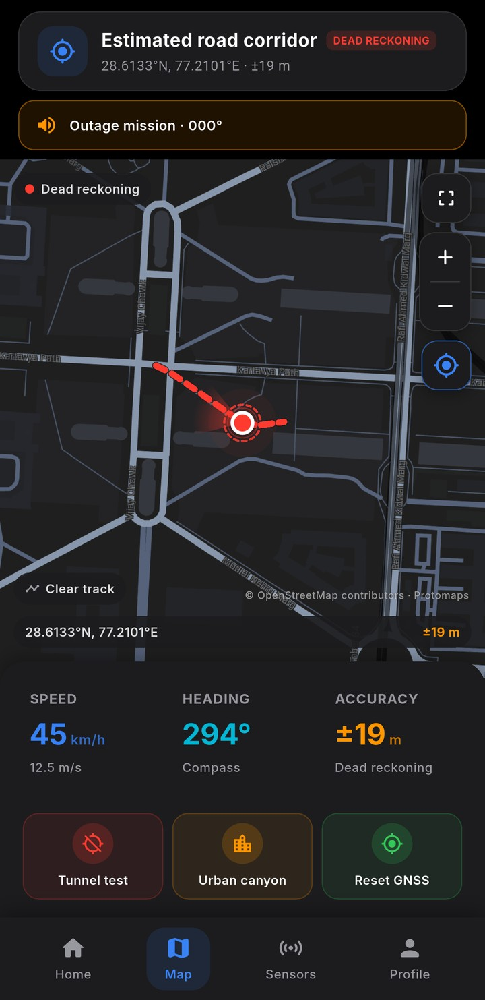
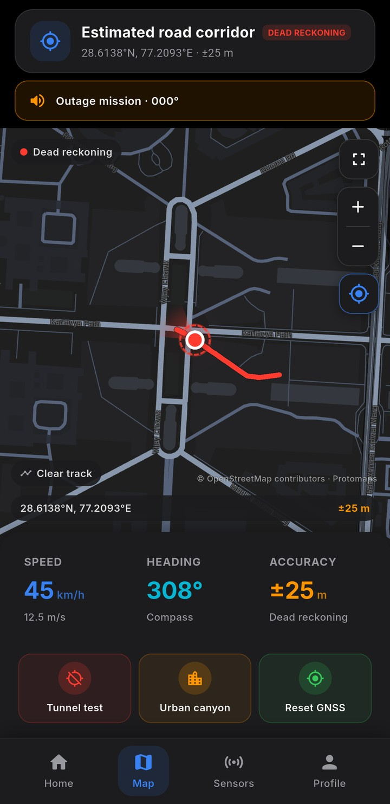
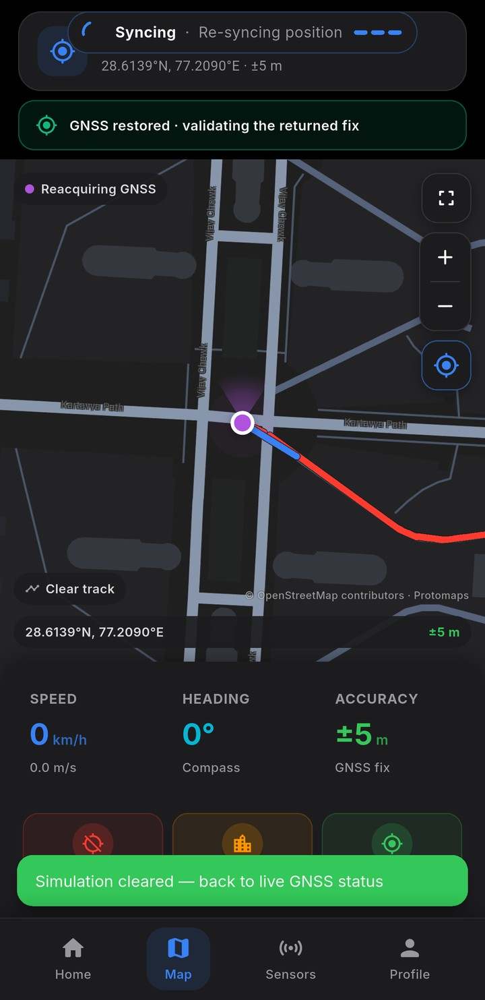
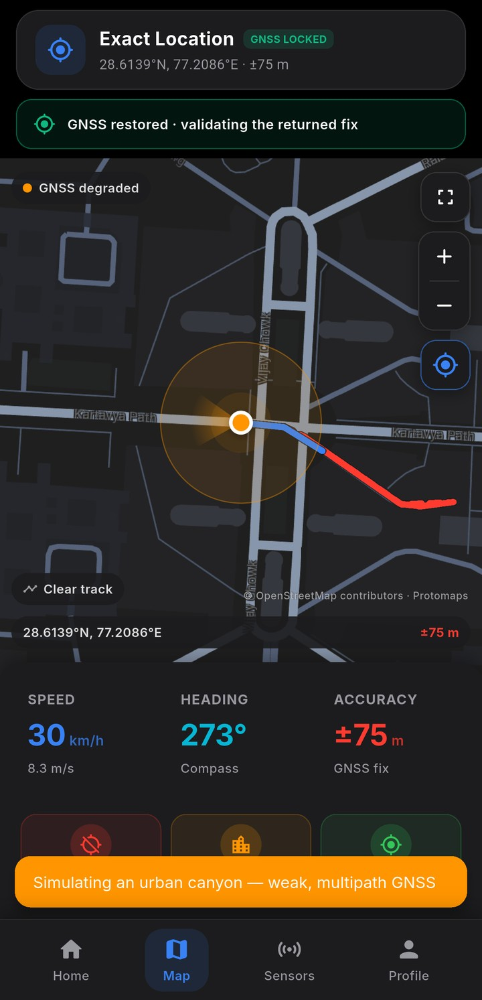
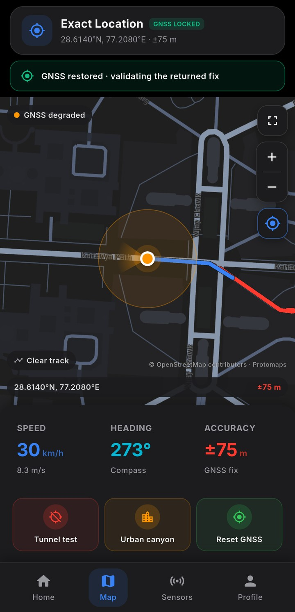
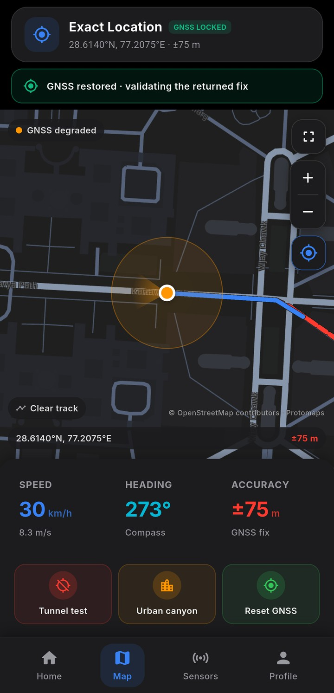
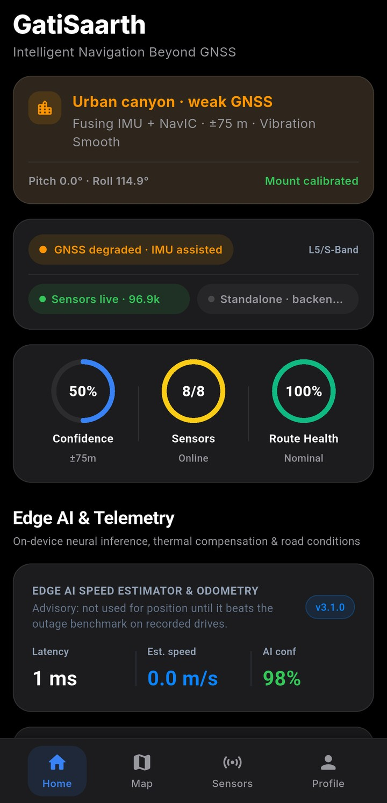
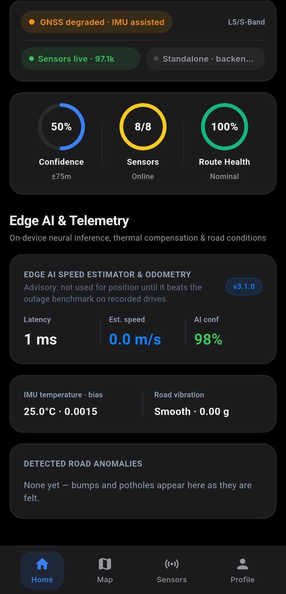
Intelligent Navigation Beyond GNSS
Your phone keeps navigating.
Sensor fusion · 8/8 Online
Eight sensors.One filter.
A 15-state error-state EKF, running on the phone.
Loses GPS.Keeps the road.
Tunnel test · simulated outage · offline OpenStreetMap vector roads
Urban canyon
Towers bounce GPS.It leans on the IMU.
Urban canyon test · simulated weak, multipath GNSS
Edge AI & Telemetry
Neural inference.On the phone.
Advisory: not used for position until it beats the outage benchmark on recorded drives.
Speaks when it matters.Checks every fix.
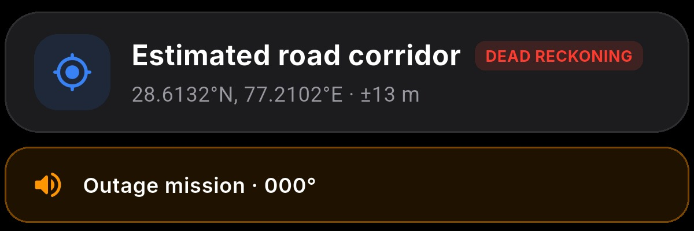
Safe outage voice
Speaks only on GNSS loss, unsafe ambiguity, and recovery
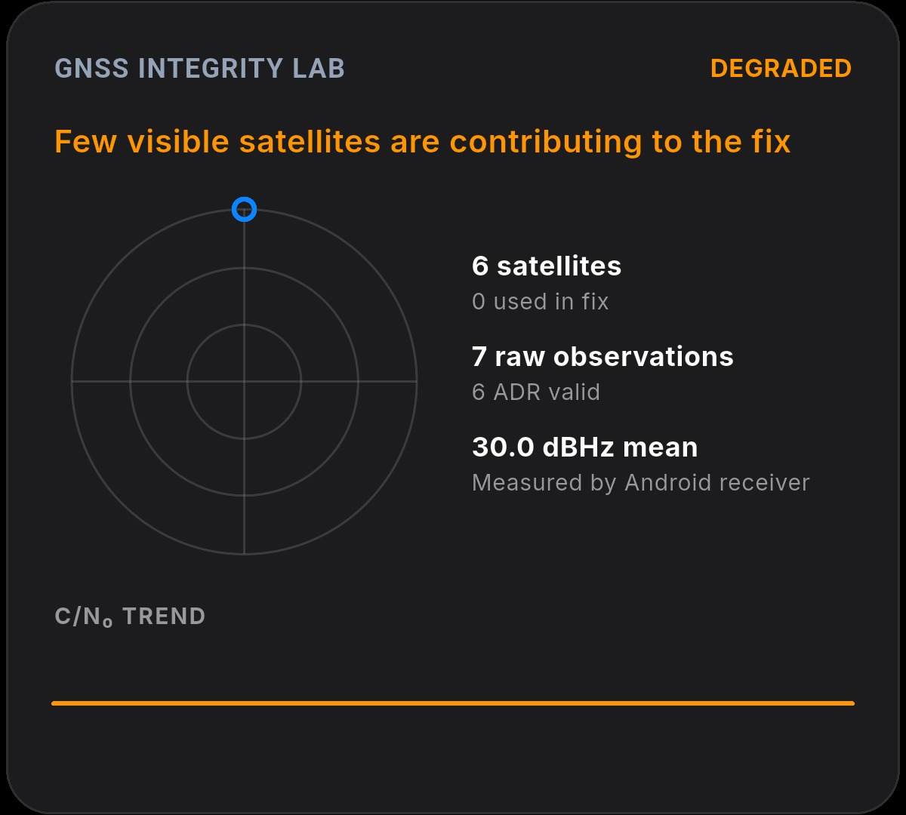
Trusted Portal Scanner
Scan thetunnel portal.
A trusted anchor snaps the filter back to a known point.
“Camera frames are processed on this phone and are not saved or uploaded.”
Car, bike or on foot.Signal or not.
Car / Four-Wheeler Dynamics Active
Non-holonomic constraint (NHC) zero-lateral slip active
Pedestrian / Last-mile Active
Vehicle-only lateral constraints disabled
Two-Wheeler Dynamics Active
Lean-angle compensation & bump suppression enabled
Automatic activity mode
Switches the dynamics to how you're moving
Offline Maps
Delhi NCR · Maharashtra · 171 MB on this phone
Intelligent Navigation Beyond GNSS
100% on-device pure Dart dead reckoning